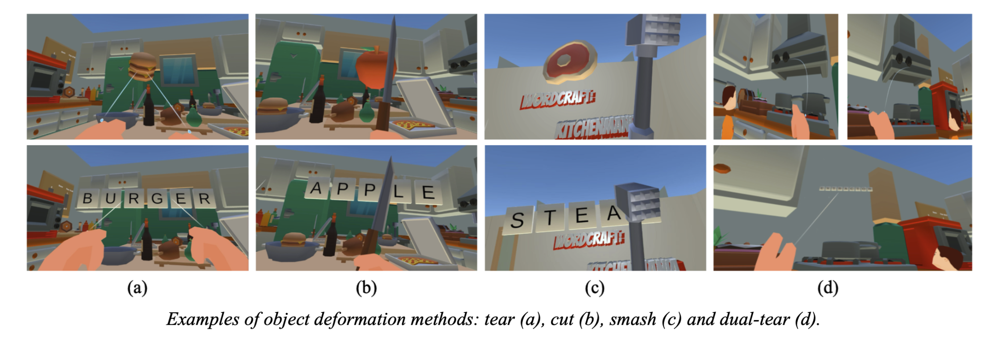
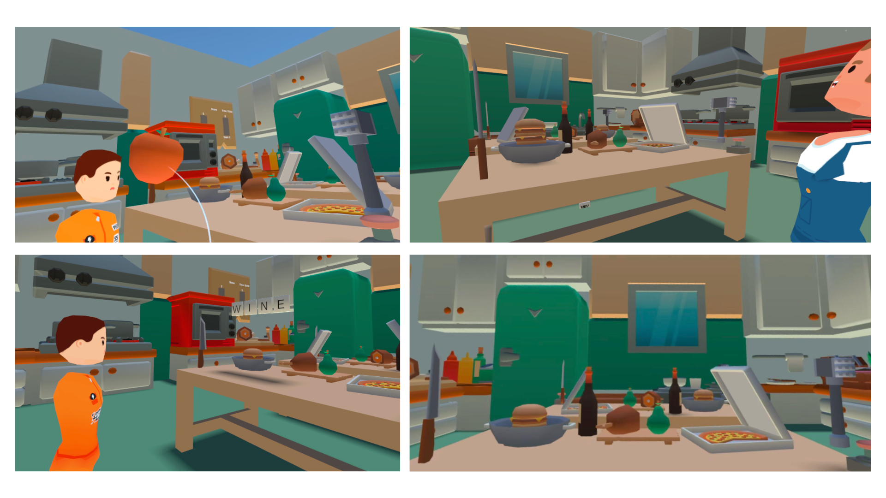

The game is inspired by WordBound, a VR game where objects are broken into letter tiles and formed into new objects by combining new letters together. We wanted to create a tabletop game with a similar concept but with a stronger focus on collaboration and competition in VR.
The main concept of the game is to interact and transform kitchen objects into letter tiles, which can then be rearranged on the table to form new words and gain points.
Objects in the scene can be broken down into letters through different interaction methods according to their type. The letter tiles can be placed and arranged on the table to form valid words, which contributes to the team's score. At the end of the round, the team with the highest score wins. Furthermore, players are assigned different roles that grant access to specific tools to help them manipulate objects. These mechanics encourage collaboration and communication, as players must coordinate their actions to find new letter tiles and form new words.

The main highlight of the interaction design is the collaborative actions. The project implements four main object interaction methods: tearing, cutting with a knife, smashing with a hammer, and dual-player tearing (where two people work together to tear a large object apart). These mechanics are designed to support both role-specific interaction and cooperative gameplay. In particular, players with different occupations are given access to different tools, which are used to process different categories of objects. Fruits and vegetables are designed to be cut using a knife, which can only be grabbed by a Chef, while meat and fish are smashed using a hammer, which is only available to the Butcher. Smaller objects can be torn apart directly, whereas larger objects require two players to cooperate in order to break them down.

As it is a multiplayer game, networking is required to ensure all players see a consistent view of the environment. Any manipulation made by players, such as moving objects, spawning letters and updating scores, must be synchronised to avoid any confusion and inconsistencies. Similarly, team scores are synchronised as well. Additionally, the highlight of interaction is the collaborative dual-tear mechanism, which requires the interaction to be carefully synchronised to ensure consistent results.
All the networking capabilites are implemented using Ubiq, an open-source networking framework for VR systems.
Contributors: Chuan Zhe Fu, Zhaoqi Chen, Liang Zhou